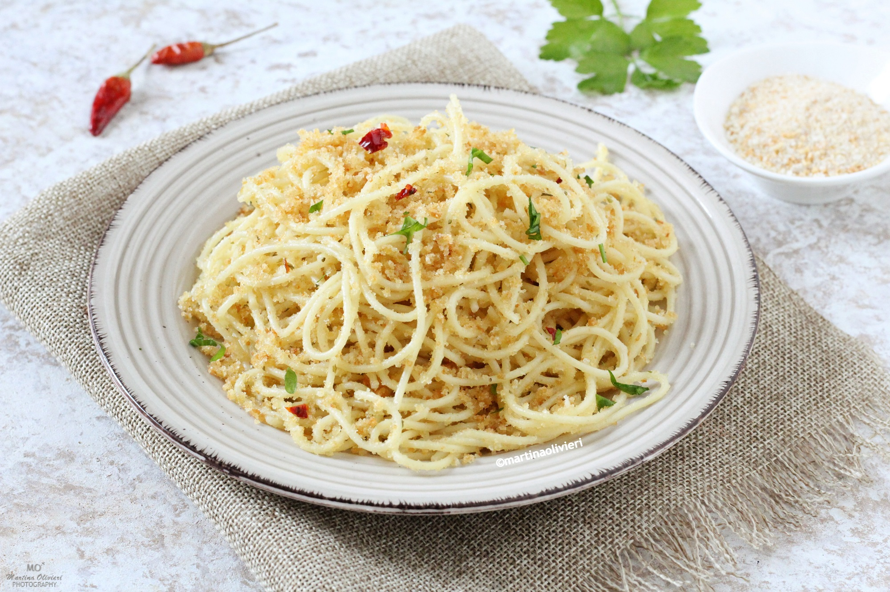

Pasta Aglio e Olio
Pasta Aglio e Olio is a simple, traditional Italian dish made with just a few basic ingredients: garlic, olive oil, pasta, and chili flakes. It's quick to make and full of flavor.
This recipe is perfect for a last-minute dinner or when you're craving something delicious but easy. It's light, satisfying, and captures the essence of rustic Italian cooking.
Ingredients
- 200g spaghetti
- 4 cloves of garlic, thinly sliced
- 1/4 cup extra virgin olive oil
- 1/2 teaspoon red pepper flakes (or to taste)
- Salt, to taste
- Fresh parsley, chopped
Steps
- Bring a large pot of salted water to a boil and cook the spaghetti until al dente. Drain and set aside.
- While the pasta cooks, heat the olive oil in a pan over medium heat.
- Add the sliced garlic and cook until golden and fragrant, but not burned.
- Stir in the red pepper flakes and cook for another 30 seconds.
- Add the cooked spaghetti to the pan and toss to coat evenly in the garlic oil.
- Season with salt and add parsley. Serve immediately.